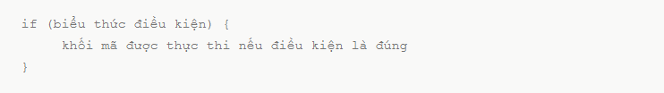
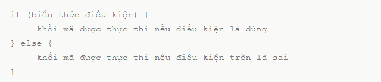
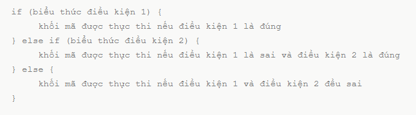
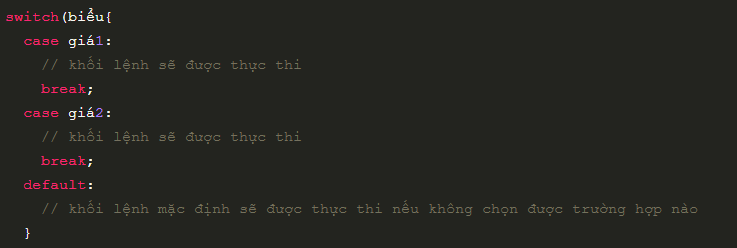
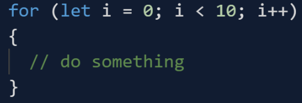
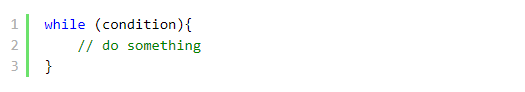
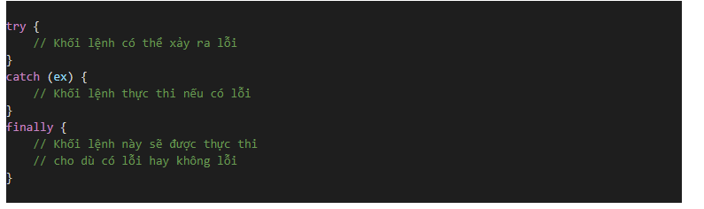
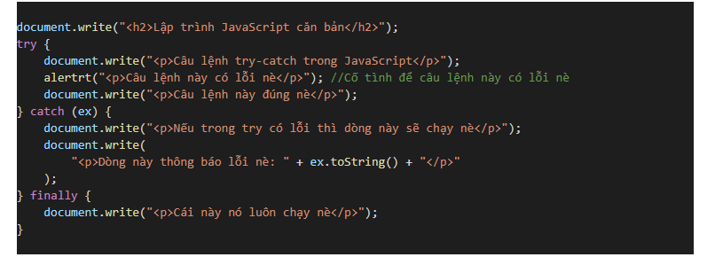
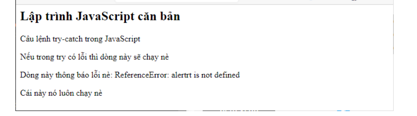

Cấu trúc điều khiển
Cấu trúc điều khiển là gì
Cấu trúc điều khiển (Control Structure) là một trong các đặc trưng cơ bản
của phương pháp lập trình cấu trúc. Trong đó, người ta sử dụng 3 cấu trúc
điều khiển để tạo nên logic của chương trình. Mọi vấn đề về logic đều được
giải quyết bằng cách phối hợp 3 cấu trúc: Cấu trúc tuần tự (Sequence
structures), Cấu trúc chọn (Selection structures) và cấu trúc lặp
(Iterative structures).
Cấu trúc điều khiển (Câu lệnh điều khiển) cho phép một lập trình viên xác
định thứ tự thực thi các lệnh trong mỗi chương trình, thể hiện qua việc:
- Bỏ qua một vài câu lệnh để thực thi các câu lệnh khác
- Lặp lại một hoặc khối lệnh trong khi điều kiện còn đúng
Câu lệnh điều kiện If – else trong JavaScript
Câu lệnh điều kiện If – else trong JavaScript được sử dụng để
kiểm tra một biểu thức điều kiện nào đó có đúng hay không, nếu đúng thì
thực thi những câu lệnh bên trong khối lệnh if và ngược lại nếu sai thì nó
sẽ bỏ qua những câu lệnh đó. Cùng tìm hiểu chi tiết về câu lệnh này nhé!
Lệnh If – else
Các lệnh điều kiện
Bạn thường rất hay sử dụng viết mã, khi bạn muốn thực hiện các hành động
khác nhau đối với các quyết định (điều kiện) khác nhau. Bạn có thể sử dụng
các lệnh điều kiện trong mã của mình để làm điều này. Trong JavaScript,
chúng ta có những lệnh điều kiện sau đây:
-
Sử dụng if để xác định một khối mã được thực thi, nếu một biểu thức điều
kiện được đánh giá là true
-
Sử dụng else để xác định một khối mã được thực thi, nếu điều kiện được
chỉ ra trong if là sai
-
Sử dụng else if nhằm xác định một điều kiện mới để kiểm tra, nếu các
điều kiện trước đó là sai
Lệnh if
Sử dụng lệnh if để xác định một khối mã JavaScript sẽ được thực thi nếu
điều kiện chỉ ra là đúng.

Phần mở rộng else
Sử dụng phẩn mở rộng else để xác định một khối mã được thực thi nếu điều
kiện là sai.

Phần mở rộng else if
Sử dụng mở rộng else if để chỉ định một điều kiện mới nếu các điều kiện
trước đó là sai.

Câu lệnh Switch – Case trong JavaScript
Câu lệnh switch – case trong JavaScript dùng để xác định một
danh sách các trường hợp và trong mỗi trường hợp sẽ có một đoạn mã, khi
giá trị của bạn trùng khớp với trường hợp nào thì đoạn mã của trường hợp
đó sẽ được thực thi.
Câu lệnh switch
Lệnh switch được sử dụng để thực hiện các hành động khác nhau dựa trên các
điều kiện khác nhau.
Câu lệnh switch – case trong JavaScript
Sử dụng lệnh switch để chọn một trong số nhiều khối mã được thực thi.

Dưới đây là cách hoạt động của lệnh:
- Biểu thức (expression) switch được đánh giá chỉ một lần.
-
Giá trị của biểu thức được so sánh với các giá trị tương ứng với mỗi
case (trường hợp).
- Nếu khớp với case nào, khối mã thuộc case đó sẽ được thực thi.
Từ khóa break
Khi trình thông dịch (interpreter) mã JavaScript gặp từ khóa
break, nó thoát ra khỏi khối switch.
Điều này sẽ làm ngừng thực thi thêm các mã và các case bên trong khối.
Lưu ý: Khi tìm thấy một case (trường hợp) phù hợp, và công việc được thực
hiện, đó là lúc cần dừng lại. Sẽ không cần kiểm tra thêm các case khác
nữa.
Từ khóa default
Từ khóa default chỉ định mã sẽ thực thi nếu kết quả của biểu thức
(expression) không phù hợp với case (trường hợp) nào
Vòng lặp for
Vòng lặp dùng để thực thi một hành động lặp đi lặp lại
Cú pháp

- let i = 0 : khởi tạo biến cho vòng lặp
- i < 10 : điều kiện để vòng lặp thực hiện
-
i++ : tăng giá trị biến chạy lên 1 mỗi khi thực hiện xong hành động
Vòng lặp while
Mục đích của vòng lặp while là để thực thi một lệnh hoặc khối code lặp đi
lặp lại miễn là expression – biểu thức là true. Một khi biểu thức trở
thành false, vòng lặp kết thúc
Cấu trúc

Xử lý lỗi với try catch
Tại sao cần bắt lỗi và xử lý lỗi
JavaScript là một ngôn ngữ lỏng lẻo (dynamic), nó
không đưa ra lỗi trong lúc biên dịch. Một số trường hợp bạn
sẽ gặp phải lúc runtime error cho những
biến không được định nghĩa hoặc là gọi những hàm chưa được định nghĩa,
hoặc là lỗi do nhập sai, lỗi xuất hiện một cách không lường trước được.
Try - Catch - Finally
Cú pháp try - catch - finally:

Trong đó:
- try {...}: Bao quanh vùng code khả nghi, có khả năng sinh ra lỗi.
-
catch { ... }: Xử lý thông tin nếu có lỗi. Kiểu như là log file hay là
log database hoặc xuất ra màn hình để người lập trình dễ kiểm soát. Hay
đơn giản là điều hướng, thông báo lỗi một cách thân thiện hơn cho người
dùng.
-
finally { ... }: Đoạn code này luôn luôn được gọi để xử lý các tác vụ
còn lại, ví dụ như reset biến hay các tác vụ khác.
ex: Là biến đại diện cho lỗi (bạn có thể đặt thế nào tùy thích). Nó sẽ
nhận sáu giá trị khác nhau có thể được trả về nếu chương trình bị lỗi.
(Chúng ta sẽ tìm hiểu ở phần dưới)
Một ví dụ về câu lệnh try - catch - finally:

Kết quả chạy trên trình duyệt như sau:

Kết quả trên cho thấy:
+ Dòng lệnh đầu tiên là in ra: Lập trình JavaScript căn bản.
+ Khối try:
- Dòng lệnh thứ nhất đúng nên in ra text trên trình duyệt
-
Dòng lệnh thứ hai sai từ khóa nên sẽ không thực thi và chuyển sang
catch để bắt lỗi.
-
Dòng lệnh thứ ba sẽ không được thực thi vì dòng lệnh phía trên nó đã bị
lỗi.
+ Khối catch:
-
Dòng lệnh thứ nhất được in ra: Điều này có nghĩa là trong
try có lỗi thì
catch mới chạy.
- Dòng lệnh thứ hai: In ra lỗi bắt được ở dạng chuỗi.
+ Khối finally:
-
Dòng lệnh trong này chạy vì cho dù có lỗi hay không có lỗi ở phần
try thì đoạn code trong
finally vẫn được thực thi.